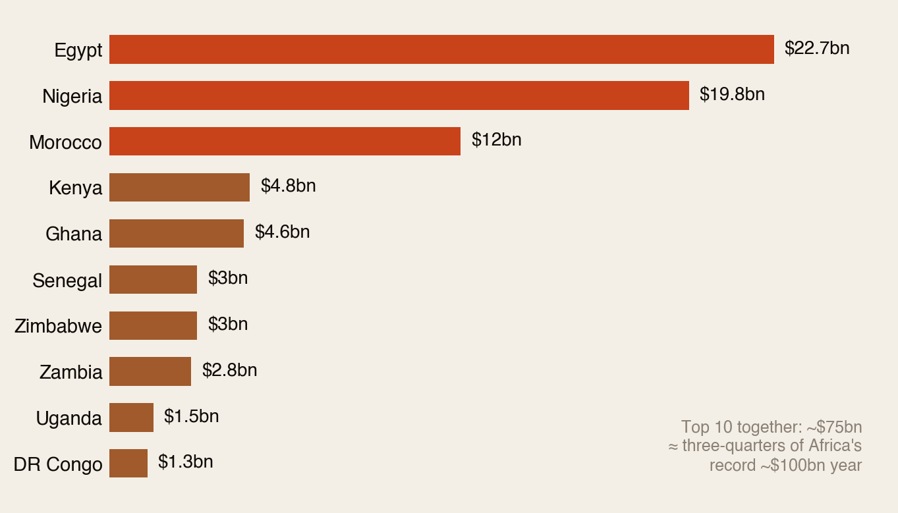
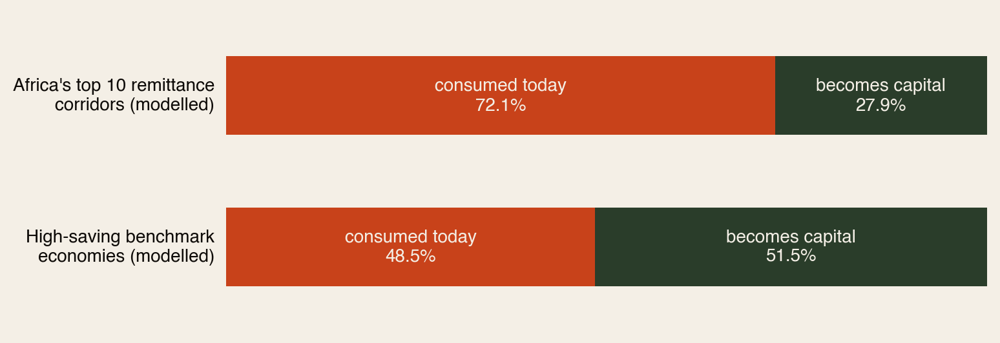
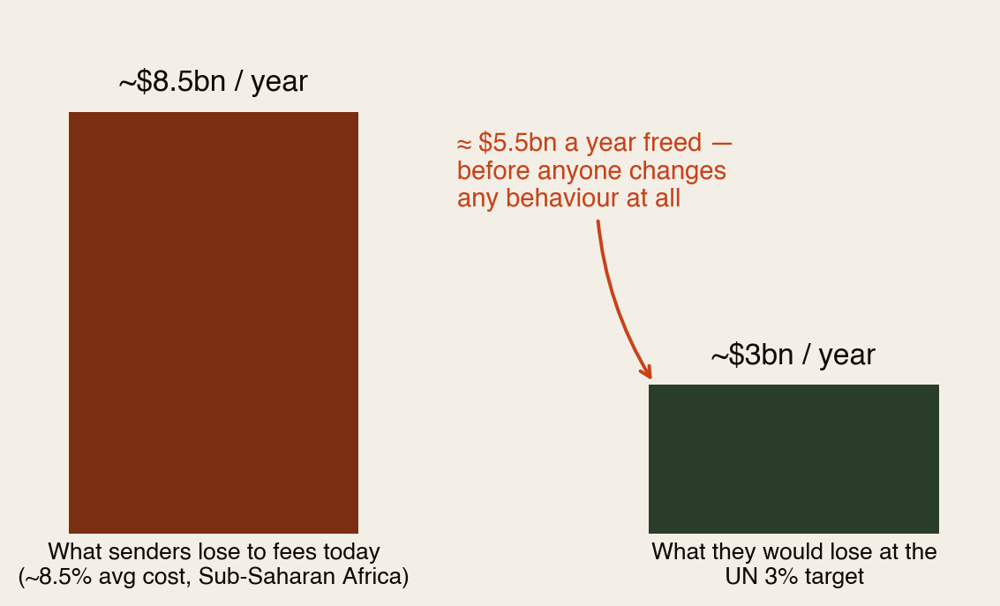
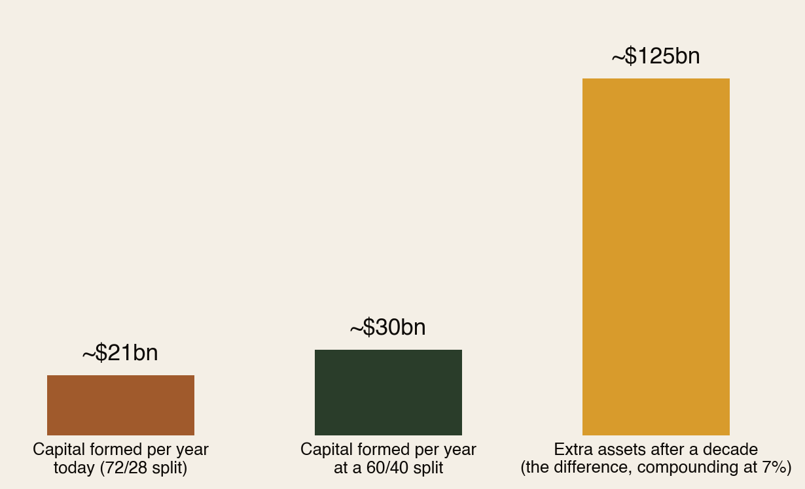

Support money vs ownership money.
Africa received a record ~$100 billion from its diaspora in 2024. About 72 cents of every dollar is consumed the year it arrives; only 28 become capital. In high-saving economies, more than half survives as capital. This report is about that gap — what causes it, what it costs, and what closing part of it is worth.
Section 01The Short Version
Think of every remittance dollar as facing one question when it lands: will you be spent, or will you become something?
- ~$100 billion — what Africa received from its diaspora in 2024. A record, bigger than most aid and rivalling foreign investment.
- 72 / 28 — the modelled split in Africa’s big remittance corridors: 72% consumed, 28% converted into capital (savings, land, education, business).
- 49 / 51 — the same split in high-saving economies like Singapore, South Korea and Norway. More than half becomes capital.
- ~$5.5bn a year — what lower transfer fees alone would free up, before anyone changes any behaviour.
- ~$125bn — the extra assets a decade of a modest 60/40 split would build in the big corridors.
The gap is not about discipline or virtue. It’s about plumbing: one system routes income into assets automatically; the other asks every family to fight for it manually.
This is the third report in our “two rooms” series — after The Price of “I Do” (one ceremony) and The Living Room vs The Bedroom (one household). This one zooms out to the whole corridor.
Section 02The $100 Billion River
Ten countries receive about three-quarters of it:

Three things make this river remarkable. It’s huge — roughly the size of Kenya’s and Ghana’s economies combined. It’s reliable — families keep sending through recessions, pandemics and coups, which aid and investors do not. And it’s personal — it arrives straight into households, no ministry in between.
That last strength is also the weakness. Money that arrives as family support gets treated as family support — absorbed by food, rent, school fees, medical bills and ceremonies before it can become anything else.
Section 03The Split: What Survives as Capital

Be clear about what this chart is: a model, not a measurement. Nobody audits every remittance dollar. But the direction is solidly supported — World Bank data shows gross savings rates of 30–43% of GDP in the benchmark countries against single digits to low twenties in most of the African sample, and remittance-use surveys consistently find most of the money going to daily needs.
And one thing the model does not say: that African families are doing something wrong. Spending on food, school fees and medicine when systems are weak isn’t a failure of discipline — it’s survival finance doing its job. The question is what happens to the part that could be preserved.
Section 04What High Savers Do Differently (It’s Not Virtue)
Singapore, Norway, South Korea and Germany don’t save because their people are more disciplined. They save because the saving happens before anyone has to decide:
- Pensions take their cut automatically — Singapore’s CPF skims salary before it ever reaches the household.
- Mortgages turn rent into equity — the biggest monthly payment builds an asset instead of burning.
- Insurance absorbs the shocks — a medical emergency doesn’t wipe out five years of savings.
- Trusted products hold value — money parked in a fund is still there, and grown, a decade later.
High-saving economies don’t ask households for heroic monthly discipline. They make capital formation the default and consumption the decision — Africa’s corridors currently work the other way around.
Section 05The Fee Leak: The Easiest Billions
Before a single dollar can be consumed or invested, the transfer itself takes a bite. Sub-Saharan Africa is the most expensive place on earth to send money — ~8.5% average cost, nearly triple the UN’s 3% target (we verified this in our Banks vs Stablecoins report).

That ~$5.5bn is the cheapest capital Africa will ever raise: nobody has to earn more, send more, or spend less. The money already exists — it’s just being paid to intermediaries. Cheaper rails (mobile money, licensed stablecoin corridors, interoperable systems) are step zero of capital formation.
Section 06The $125 Billion Prize
Nobody is asking Africa’s corridors to jump from 72/28 to Singapore overnight. So here’s the modest scenario: just 60/40 — twelve cents more of every dollar preserved.

Twelve cents on the dollar, across the big corridors, for a decade, at ordinary returns — and the diaspora quietly builds ~$125 billion of household assets: land with titles, tuition that finished, businesses that survived, deposits that became homes. That’s the entire annual remittance flow, converted from consumption into permanent wealth, once every decade.
Section 07The Bright Spots Already Working
- Kenya has the strongest support-to-capital pathway on the continent: remittances land on M-Pesa rails where savings products (M-Shwari, Saccos) are one tap away — 90% of adults have accounts.
- Senegal is the proof case researchers cite: when remittances went digital, women who received them became more likely to invest in small enterprises.
- Nigeria has the biggest upside — $19.8bn of scale, a fintech sector already testing remittance-linked credit for small businesses.
- Egypt shows policy can pull flows into formal channels — even while household pressure keeps consumption high.
The pattern across all four: nobody preached savings. They changed the plumbing — and behaviour followed.
Section 08The Diaspora Playbook
For the builders — the products that move the split (each exists somewhere already; none exists everywhere):
- The automatic skim. A remittance account that quietly routes 10% of every inflow into protected savings — the CPF idea, sized for a remittance.
- The housing wallet. Recurring transfers accumulate toward land, a deposit or building materials — instead of dissolving into the monthly float.
- The education fund. School fees as a structured, pre-funded plan rather than a chaotic termly emergency.
- Remittance credit scoring. Years of reliable inflows should unlock formal small-business borrowing. Today they mostly don’t.
And for the sender — the personal version of the same idea, this week:
- Split before you send. Decide a ratio — say 70% support, 20% asset, 10% emergency — and make it automatic. The exact number matters less than deciding it once instead of renegotiating it every month.
- Give the asset money a name. Money labelled “Mama’s land” or “Ada’s degree” survives pressure that money labelled “savings” does not.
- Route around the fee. Moving from a 8–9% channel to a 2–3% one is an instant, permanent raise for your family.
Support money keeps your family standing. Ownership money means one day they won’t need it. The goal was never to stop sending — it’s to make sure some of what you send is still there in ten years.
Section 09How We Checked
This report was built from a contributed comparative analysis (“Consumption vs Capital”), independently fact-checked and extended by AGF. The scorecard:
- Verified: the 2024 top-10 remittance figures (Egypt $22.7bn, Nigeria $19.8bn, Morocco $12bn, Kenya $4.8bn, Ghana $4.6bn — World Bank-linked, cross-checked against multiple outlets) and the record ~$100bn continental total. The ~8.5% Sub-Saharan transfer cost comes from our own previously verified research (World Bank Remittance Prices Worldwide).
- Labelled as a model: the 72/28 and 49/51 splits are the source’s illustrative construction, not measured flows. We kept them because the direction is well supported by World Bank savings data and remittance-use surveys — but we present them as an index of the gap, not statistics.
- Caveat applied: the source mixes gross national savings (which include government and corporate saving — e.g. Norway’s oil fund) with household saving rates from mixed series. We use them only directionally: benchmark economies preserve dramatically more income as capital, whichever series you pick.
- Added by AGF: the fee-leak calculation, the 60/40 compounding scenario, the bright-spots synthesis, the sender playbook, and the connection to our fact-checked wedding and household-spending research — which explains where much of the consumption share actually goes.
Sources: World Bank / Business Insider Africa top-10 remittance ranking (2024); GFRID; UN OSAA remittance policy briefs (2025–26); World Bank Remittance Prices Worldwide; World Bank gross savings (NY.GNS.ICTR.ZS); OECD household savings; Trading Economics national series. Full detail in the PDF edition. Companions: The Living Room vs The Bedroom, The Price of “I Do”, Banks vs Stablecoins.
The diaspora helps the diaspora.
Africa Global Forum is a peer network for Africans abroad — help each other, sit together, and bounce ideas. The research above is part of an open library. The Forum itself is by application.